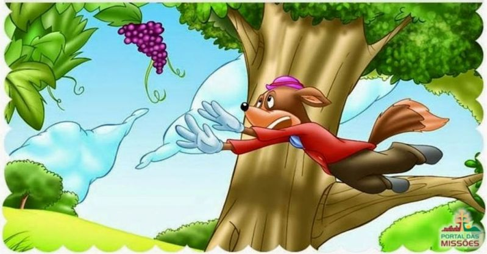

A Raposa e as uvas

Era uma vez uma raposa que não conseguia nenhuma caça para aliviar sua fome havia muitos dias.
Passando por um sitio, a raposa viu alguns cachos de uvas pendurados. Mas os cachos de uvas estavam no alto da videira, e a raposa precisava inventar um jeito de alcançá-los sem chamar a atenção do caseiro.
Frustrada, a raposa ficou pensando muito até lhe ocorreu outra ideia. Ela subiu até o topo de uma árvore, ali perto, chegando lá em cima, jogou-se para tentar alcançar as uvas tão desejadas. Porém o que conseguiu foi um galo na cabeça, pois acabou caindo sobre uma das pedras ao lado da parreira.

Tentou empurrar uma pedra grande para baixo do parreiral, mas não conseguiu. A pedra era pesada demais.
Então, teve de se contentar empurrando uma pedra pequena. Subiu sobre ela e pulou varias vezes, mas não alcançou as deliciosas uvas.
A raposa parecia que ainda não tinha aprendido a lição. Tentava de todo jeito alcançar as uvas apetitosas.
Moral da história: é fácil desprezar aquilo que não se pode obter.